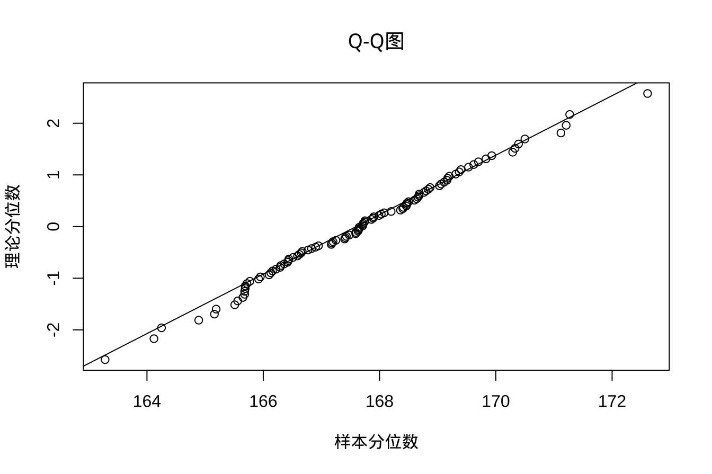

library(tidyverse)
library(kableExtra)3 总体均数估计与t 检验
3.1 安装包
例3-1 若某市1999年18岁男生身高服从均数为167.7cm，标准差为5.3cm的正态分布。从该正态分布N(167.7, 5.32)cm总体中随机抽样100次即共抽取样本g=100个，每次样本含量10人，计算得到每个样本的均数及标准差，数据以Stata格式保存，利用haven::read_dta()函数导入R变量height_samples中。是部分数据。
height_samples <- haven::read_dta("datasets/例03-01.dta")
head(height_samples) |>
kbl(align = "c") |>
kable_classic(full_width = F) |>
row_spec(0, bold = T)| no | mean | sd |
|---|---|---|
| 1 | 167.41 | 2.74 |
| 2 | 165.56 | 6.57 |
| 3 | 168.20 | 5.36 |
| 4 | 166.67 | 4.81 |
| 5 | 164.89 | 5.41 |
| 6 | 166.36 | 4.50 |
3.2 标准误和可信区间
3.2.1 单一总体均数的可信区间
例3-2 计算例3-1中每个样本的标准误和可信区间
mean <- height_samples$mean
sd <- height_samples$sd
lower_bound = vector(mode = "double", length = 100)
upper_bound = vector(mode = "double", length = 100)
for(i in seq(1:100)){
ttest <- DescTools::TTestA(
mx = mean[i],
sx = sd[i],
nx = 10,
alternative = "two.sided",
mu = 167.7
)
ci <- ttest$conf.int
lower_bound[i] <- ci[1]
upper_bound[i] <- ci[2]
}
height_samples |>
mutate(
se = sd / sqrt(10),
lower_bound = lower_bound,
upper_bound = upper_bound
) |>
head()|>
kbl(digits = 2, align = "c") |>
kable_classic(full_width = F) |>
row_spec(0, bold = T)- 1
-
TTestA()根据用户提供的统计量进行单个或两个样本 t 检验，而不是像t.test()中那样基于数据直接进行检验；此例是单样本，两样本类同，参见下例。
| no | mean | sd | se | lower_bound | upper_bound |
|---|---|---|---|---|---|
| 1 | 167.41 | 2.74 | 0.87 | 165.45 | 169.37 |
| 2 | 165.56 | 6.57 | 2.08 | 160.86 | 170.26 |
| 3 | 168.20 | 5.36 | 1.69 | 164.37 | 172.03 |
| 4 | 166.67 | 4.81 | 1.52 | 163.23 | 170.11 |
| 5 | 164.89 | 5.41 | 1.71 | 161.02 | 168.76 |
| 6 | 166.36 | 4.50 | 1.42 | 163.14 | 169.58 |
3.2.2 两总体均数差的可信区间
例3-3 61名患者随机分为两组，已知安慰剂组29例，试验组32例，治疗前安慰剂组IL-2的均数为20.1，标准差为7.02；试验组IL-2的均数为16.89，标准差为8.46。问两组治疗前基线的IL-2相差有多大？
ttest <- DescTools::TTestA(
mx = 20.1,
my = 16.89,
sx = 7.02,
sy = 8.46,
nx = 29,
ny = 32,
alternative = "two.sided"
)
ci <- ttest$conf.int |>
round(digits = 2)因此，两组治疗前基线的IL-2总体均数之差的95%可信区间为(-0.76, 7.18)。
3.3 t 检验
计量资料的假设检验中，最常见、最简单的方法是 t 检验。
3.3.1 单样本 t 检验
例3-4 某医生测量了36名从事铅作业男性工人的血红蛋白含量，算得其均数为130.83g/L，标准差为25.74g/L。问从事铅作业工人的血红蛋白是否不同于正常成年男性平均值140g/L？
haven::read_dta("datasets/例03-05.dta") |>
t.test(mu = 140) |>
broom::tidy() |>
kbl(digits = 3, align = "c") |>
kable_classic(full_width = F) |>
row_spec(0, bold = T)- 1
- 把一个对象变成一个整齐的tibble，方便表的格式化输出
| estimate | statistic | p.value | parameter | conf.low | conf.high | method | alternative |
|---|---|---|---|---|---|---|---|
| 130.833 | -2.137 | 0.04 | 35 | 122.124 | 139.543 | One Sample t-test | two.sided |
3.3.2 配对样本 t 检验
例3-5 为比较两种方法对乳酸饮料中脂肪含量测定结果是否不同，随机抽取了10份乳酸饮料制品，分别用脂肪酸水解法和哥特里－罗紫法测定其结果。问两法测定结果是否不同？
paired <- haven::read_dta("datasets/例03-06.dta")
t.test(
x = paired$x1,
y = paired$x2,
paired = T
) |>
broom::tidy() |>
kbl(digits = 3, align = "c") |>
kable_classic(full_width = F) |>
row_spec(0, bold = T)| estimate | statistic | p.value | parameter | conf.low | conf.high | method | alternative |
|---|---|---|---|---|---|---|---|
| 0.272 | 7.926 | 0 | 9 | 0.195 | 0.35 | Paired t-test | two.sided |
3.3.3 两样本 t 检验
例3-6 为研究国产四类新药阿卡波糖胶囊的降血糖效果，某医院用40名II型糖尿病病人进行同期随机对照试验。研究者将这些病人随机等分到试验组(用阿卡波糖胶囊)和对照组(用拜唐苹胶囊)，分别测得试验开始前和8周时的空腹血糖，算得空腹血糖下降值，能否认为该国产四类新药阿卡波糖胶囊与拜唐苹胶囊对空腹血糖的降糖效果不同？
two_sample <- haven::read_dta("datasets/例03-07.dta")
t.test(
x = two_sample$x1,
y = two_sample$x2,
) |>
broom::tidy() |>
kbl(digits = 3, align = "c") |>
kable_classic(full_width = F) |>
row_spec(0, bold = T)| estimate | estimate1 | estimate2 | statistic | p.value | parameter | conf.low | conf.high | method | alternative |
|---|---|---|---|---|---|---|---|---|---|
| -0.56 | 2.065 | 2.625 | -0.642 | 0.525 | 36.086 | -2.329 | 1.209 | Welch Two Sample t-test | two.sided |
3.3.4 近似 t 检验
进行两小样本均数比较，若两总体方差不等，可采用近似 t 检验:
例3-7 在上述例3-6国产四类新药阿卡波糖胶囊的降血糖效果研究中，测得用拜唐苹胶囊对照组20例患者和阿卡波糖胶囊试验组20例患者，其8周时糖化血红蛋白HbA1c (%)的下降值见 表 3.1 。问使用两种不同药物的患者其HbA1c下降值是否相同？
| 分组 | \(n\) | \(\bar{X}\) | \(S\) |
|---|---|---|---|
| 试验组(阿卡波糖胶囊) | 20 | 1.13 | 0.70 |
| 对照组(拜唐苹胶囊) | 20 | 1.46 | 1.36 |
knitr::kable()成功将输出到html的表中的字符渲染为数学符号，其他包函数测试不成功
本例中已知样本均数和方差，标准的t.test()通常用于直接分析数据集而非样本统计量，这里采用DescTools::TTestA()函数。经两样本方差齐性的\(F\)检验 (在 小节 3.4 中具体介绍)，两组的总体方差不等，故进行近似 t 检验。
DescTools::TTestA(
mx = 1.13,
my = 1.46,
sx = 0.70,
sy = 1.36,
nx = 20,
ny = 20,
alternative = "two.sided",
var.equal = F
) |>
broom::tidy() |>
kbl(digits = 3, align = "c") |>
kable_classic(full_width = F) |>
row_spec(0, bold = T)- 1
-
var.equal，指示两个方差是否相等的逻辑变量。如果为FALSE，则使用Welch (或Satterthwaite) 法进行近似 t 检验
| estimate | estimate1 | estimate2 | statistic | p.value | parameter | conf.low | conf.high | method | alternative |
|---|---|---|---|---|---|---|---|---|---|
| -0.33 | 1.13 | 1.46 | -0.965 | 0.343 | 28.407 | -1.03 | 0.37 | Welch Two Sample t-test | two.sided |
3.4 正态和方差齐性检验
3.4.1 正态性检验
下面对例3-1中的100个样本均数进行正态性检验：
（一）计算法
下面分别采用stats::shapiro.test()和DescTools::ShapiroFranciaTest()进行正态性检验：
x <- height_samples |>
select(mean) |>
unlist(use.names = F)
stats::shapiro.test(x) |>
broom::tidy() |>
rbind(
DescTools::ShapiroFranciaTest(x) |>
broom::tidy()
) |>
kbl(digits = 3, align = "c") |>
kable_classic(full_width = F) |>
row_spec(0, bold = T)- 1
-
注意：这里须加
unlist(use.names = FALSE)，否则会报错 - 2
- Shapiro-Wilk方法
- 3
- Shapiro-Francia方法
| statistic | p.value | method |
|---|---|---|
| 0.994 | 0.944 | Shapiro-Wilk normality test |
| 0.993 | 0.802 | Shapiro-Francia normality test |
shapiro.test(x)要求x是数值型变量，所以虽然tibble中的mean是数值型，但不能直接传递给使用shapiro.test(x)，需加一个unlist(x, use.names = FALSE)操作，否则会报错，如下面代码块所示：
x <- height_samples |>
select(mean)
stats::shapiro.test(x)
#> Error in stats::shapiro.test(x): is.numeric(x) is not TRUE（二）图示法
图示法主要使用分位数图 (P-P图)和概率图 (Q-Q图)，其中以Q-Q图效率较高。如果分析的数据服从正态分布，则图上的数据点应分布在直线附近，否则数据点偏离直线较远。
x <- height_samples |>
select(mean) |>
unlist(use.names = F)
stats::qqnorm(
x,
main = "Q-Q图",
xlab = "理论分位数",
ylab = "样本分位数",
datax = T
)
stats::qqline(
x,
datax = T
)
3.4.2 方差齐性检验
对例3-6的数据，利用\(F\)检验判断两总体空腹血糖下降值的方差是否相等。这里利用DescTools::LeveneTest()进行方差齐性检验
tb <- two_sample |>
pivot_longer(
cols = everything(),
names_to = "group"
) |>
mutate(
group = as.factor(group)
)
DescTools::LeveneTest(tb$value, group = tb$group) |>
broom::tidy() |>
kbl(digits = 3, align = "c") |>
kable_classic(full_width = F) |>
row_spec(0, bold = T)- 1
- 将原数据框进行拉长转换，以符合DescTools::LeveneTest()参数的要求
- 2
- 作为数据分组变量，需转换为因子类型，否则会输出警告
| statistic | p.value | df | df.residual |
|---|---|---|---|
| 0.493 | 0.487 | 1 | 38 |